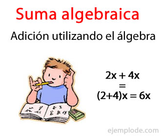
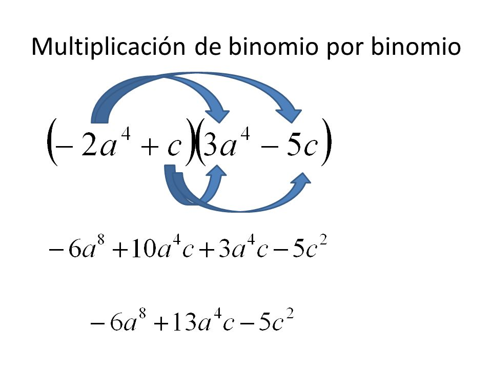
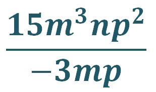

Suma

En álgebra la suma es una de las operaciones fundamentales y la más básica, sirve para sumar monomios y
polinomios.
La suma algebraica sirve para sumar el valor de dos o más expresiones algebraicas. Como
se trata de
expresiones que
están compuestas por términos numéricos y literales, y con exponentes.
Resta

La resta algebraica es una de las operaciones fundamentales en el estudio del álgebra. Sirve para restar
monomios y
polinomios. Con la resta algebraica sustraemos el valor de una expresión algebraica de otra. Por ser
expresiones que
están compuestas por términos numéricos, literales, y exponentes.
Multiplicacion

La multiplicación es la operación matemática que consiste en hallar el resultado de sumar un número
tantas veces
como indique otro.
a · b = c
Los factores (a y b) son los números que se multiplican.
Al factor a también se le llama multiplicando.
Al factor b también se le llama multiplicador.
El producto (c) es el resultado de la multiplicación.
Division

Al dividir en algebra se siguen los mismos pasos que en la multiplicación pero de manera invertida,
ósea, haciendo lo contrario. Los pasos para la división son lo siguientes:
- Dividir el signo aplicando la misma regla de la multiplicación
- Dividir los coeficientes o números
- Dividir la incógnita o letra, al hacerlo se restan los exponentes (número pequeños de la derecha y si no hay
exponente, este siempre va a ser 1)